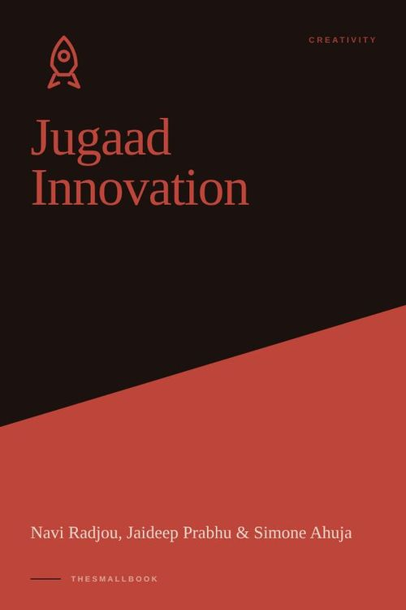

Library › Authors › Navi Radjou, Jaideep Prabhu & Simone Ahuja
Books by Navi Radjou, Jaideep Prabhu & Simone Ahuja
Navi Radjou, Jaideep Prabhu & Simone Ahuja has one book in the library. Every book here is read down to the big idea, the lessons, the lines worth keeping and the actions worth taking. Start with the summary, then buy the full book if it earns a place on your shelf.

Jugaad Innovation
2012 · 8 min · 6 lessons
Radjou, Prabhu and Ahuja show how India's frugal 'jugaad' mindset - constraints as fuel, flexibility over perfection - is a learnable innovation advantage.
Radjou, Prabhu and Ahuja argue that the West's innovation model - big R&D budgets, long timelines, perfect solutions - is being outmaneuvered by 'jugaad': the frugal, flexible, inclusive approach that Indians have perfected out of necessity. Jugaad innovators do more with less: the refrigerator made from clay that cools without electricity, the affordable cardiac surgery that costs a fraction of the Western price, the car engineered for the masses. The book's core claim: in a resource-constrained world, the...
Lessons in the summary
- Jugaad Is Not a Hack - It Is a Philosophy of Resourcefulness
- Frugal Engineering: The Art of Doing More With Less
- The Inclusive Approach: The Bottom of the Pyramid Is the Next Market
- Flexibility Over Perfection: The Improvise-Adapt-Overcome Loop
- The Heart and the Gut: Purpose-Driven Innovation
- From Jugaad to Systematic Frugal Innovation
Lines worth keeping
- Jugaad is not a shortcut - it is a philosophy of resourcefulness.
- Constraints are not obstacles to innovation; they are its raw material.
- The bottom of the pyramid is a laboratory, not a charity case.
Questions Navi Radjou, Jaideep Prabhu & Simone Ahuja helps answer
Read nearby authors next
- Adam Grant 4 books
- Chip Heath & Dan Heath 4 books
- Seth Godin 4 books
- Austin Kleon 3 books
- Steven Pressfield 3 books
- Daniel Coyle 2 books
- Anne Lamott 1 book
- David Bayles & Ted Orland 1 book
Questions Navi Radjou, Jaideep Prabhu & Simone Ahuja helps answer
Where should I start with Navi Radjou, Jaideep Prabhu & Simone Ahuja? Start with Jugaad Innovation: Radjou, Prabhu and Ahuja show how India's frugal 'jugaad' mindset - constraints as fuel, flexibility over perfection - is a learnable innovation advantage.